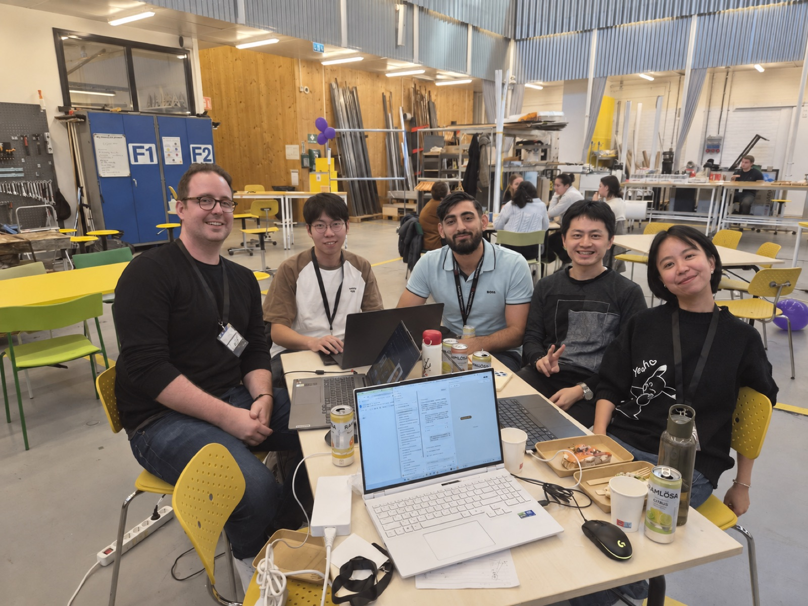

The team
We are
Go Pikachu!
SKF track
GTW × Chalmers Hackathon 2026

Leif Almrot
Zhichao Zhou
Darin Jaderi
Shuwen Gong
Jianying Wang
Industrial humanoids · SKF
Reuse skills.
Test everything.
The challenge · SKF × Gothenburg Tech Week Chalmers Hackathon 2026
Make training easier.
How can we make the training of humanoids in an industrial setting easier and more efficient?
Compare
learning methods for industrial humanoids: manual programming, imitation, reinforcement learning, sim-to-real, foundation models
Build
one locomotion task end to end, in simulation: walking up stairs on a Unitree G1
Judge
on industrial criteria: data effort, training time, safety, repeatability, adaptability, compute, explainability, maturity
Deliver: code, simulation, results, and why it worked or failed.
The factory pipeline
One robot's failure becomes every robot's test.
V0 · a policy trained on flat ground meets a 15 cm stair.
0%
on steps and stairs · 21% of our whole test course
Seven learning methods · SKF's eight criteria
No single method fits.
Manual programming
+ certifiable, repeatable
− breaks when anything changes
Reinforcement learning
+ adapts, needs no human data
− hard to explain and certify
Foundation models
+ flexible, understands language
− immature, heavy compute
So layer them: learned skills to move, and choose skills based on perception.
also compared: teleoperation · imitation learning · sim-to-real · human feedback
V0.5 · reuse a trained stair skill · two ways to choose it
Eyes or map?
Robot's own eyes · Darin
0%
passes the pallet · blind under glare
own sensors only, drifts over long runs
Factory map + cameras · Zhichao
0%
sees the glare step · misses the pallet
needs cameras installed in the factory
V0.5 · each source alone
Alone, each one fails.
V1.0 · eyes + map + a classical safety layer
Together.
46.7 m test course · 15 segments · 10 random starts each · V0 as delivered: 21%
V1.0 · one continuous run · full course at 8× speed
The whole process.
15 / 15
segments passed
slopes and steps
5–15°, 5–15 cm
over the pallet
the map doesn't know
stops for the worker
at 1.67 m, then goes on
over the glare step
the scan can't see
up and down the stairs
After V1.0 · the tests decide what to train next
More challenges.
A real route · switchback stairs, 1.8 m up
22 / 25
reach the goal · all 3 misses on the long descent
next to train: long stairs down
8 kg on the chest
Carrying loads · fine-tuned on GPUs
6 → 20 · 22 → 3
with 8 kg · without a load · out of 25
caught before deployment
The cost of a new skill
One night.
About $25.
4 h
to train 6 variants
in parallel, overnight
17 GPU-h
one L40S each · $1.50 / h
median cloud price
6 min
to retest all of them
1253 runs · 16 CPU cores
Next · a plan, not yet tested
One skill is the start.
Big brain · skill library
Stairs are one skill.
8 skill groups a shop floor needs · only stairs is tested so far
Big brain · the next skill
Every floor is different.
Cyber brain · a plan
Three brains, one fleet.
One fails. Every robot learns.
From our big brain blueprint · not yet built
The team
We are
Go Pikachu!
SKF track
GTW × Chalmers Hackathon 2026
Leif Almrot
Zhichao Zhou
Darin Jaderi
Shuwen Gong
Jianying Wang